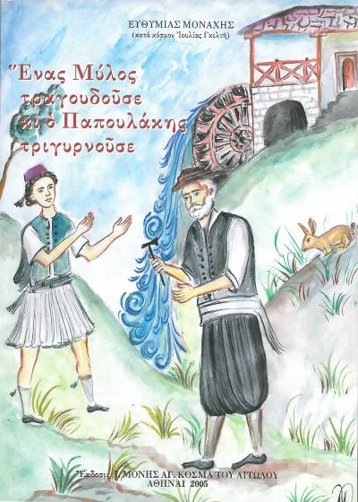
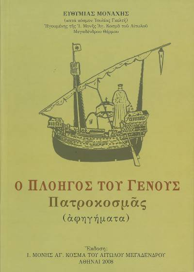
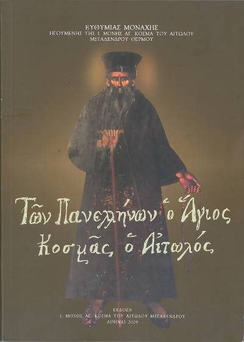
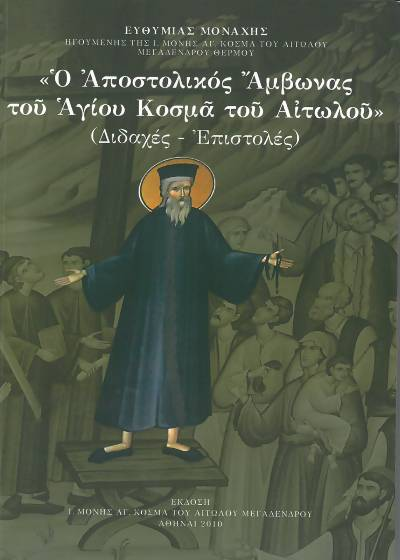
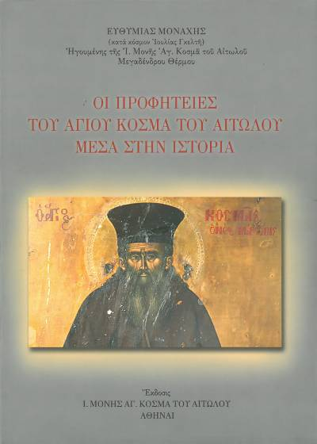

Ένας μύλος τραγουδούσε κι ο Παπουλάκης τραγουδούσε
Προσέχετε αδελφοί μου χριστιανοί, εσείς οι λαικοί, να αγαπάτε και να
σεβόσαστε πολύ τους παπάδες σας. Να μην τους κατακρίνετε και να μην
τους κατηγοράτε, γιατί βάζετε πάνω σας φωτιά και καιγόσαστε.
Προσέξτε! Γιατί οι ιερείς(παπάδες), επειδή τους έδωσε ο θεός την
ιερωσύνη, είναι ανώτεροι από τους αγγέλους και από τους βασιληάδες.
Εγώ αν δώ έναν παπά και έναν βασιλιά, θα τιμήσω πρώτα τον παπά. Το
ίδιο αν δω έναν παπά και έναν Άγγελο. Κι εσείς πρώτα να φιλήσετε το
χέρι του παπά και ύστερα του Άγγελου.

Ο πλοηγός του γένους - Πατροκοσμάς
Ο Άγιος Κοσμάς είχε καθίσει πολύ καιρό στην Κεφαλονιά διδάσκοντας
και κάνοντας θαύματα. Ίσως και δύο χρόνια. Συζητούσαν οι παπάδες με
το θείο Θωμά για τον Πατροκοσμά: - Τι να δεις, κύριε Θωμά! Με τις
διδαχές του Άη-Κοσμά άλλαξε το νησί μας, είπε ο παπα-Χρήστος. - Τι
να δεις: πρόσθεσε ο παπα-Γιώργης. Άνθρωποι που έκαναν βαρειές
αμαρτίες μετάνοιωσαν, εξομολογήθηκαν κι έγιναν καλοί άνθρωποι.
Διαλυμένες οικογένειες, χωρισμένοι σύζυγοι επέστρεψαν στην
οικογένεια τους και ζουν αγαπημένοι. - Και που να σου πω,
παπα-Γιώργη, κι εγώ την πείρα μου: κάθε τόσο έρχονται άνθρωποι που
έκλεβαν, μου φέρνουν πράγματα να τα δώσω πίσω σε εκείνους που τα
πήραν και να τους πω να τους συγχωρήσουν.

Των πανελλήνων ο Άγιος Κοσμάς ο Αιτωλός
Λέγοντας πως ο μοναχός δεν πρέπει να γυρίζει έξω από το μοναστήρι
του στις πόλεις κλπ ύστερα στρέφει το λόγο για τον εαυτό του: “Μα
θέλετε ειπή: και εσύ καλόγηρος είσαι, διατί συναναστρέφεσαι εις τον
κόσμον; Και εγώ, αδελφοί μου, κακά το κάμνω μα επειδή το γένος μας
έπεσε εις αμάθειαν, είπα, ας χάσει ο Χριστός εμένα, ένα πρόβατον,
και ας κερδίσει τα άλλα. Ίσως η ευσπλαχνία του Θεού και η ευχή σας
σώση και εμέναν” Αυτό είναι το μυστικό του Αγίου Κοσμά: η σωτηρία
του γένους Αν δεν υπήρχαν αυτές οι συνθήκες ο μοναχός Κοσμάς δεν θα
είχε βγει ποτέ έξω από το Άγιο Όρος. Είχε όμως από το Θεό την
πρόσκληση να σώσει την Ελλάδα από τον όλεθρο της αρνήσεως του
Χριστού, από τον εξισλαμισμό και να την οδηγήσει στην ανάσταση. Ο
Άγιος Κοσμάς ήταν μοναχός μέχρι το κόκκαλο.

Ο αποστολικός άμβωνας του Αγίου Κοσμά του Αιτωλού
Ο αλείπτης πολλών Νεομαρτύρων, Νεομάρτυς και ο ίδιος, Άγιος Κοσμάς,
ωδηγούσε τους χριστιανούς ως εξής στο μαρτύριο: “Τούτο σας λέγω
πάλιν και σας παραγγέλω: καν ο ουρανός να κατέβη κάτω καν η γη να
ανέβη πάνω καν όλος ο κόσμος να χαλάση καθώς μέλλει να χαλάση
σήμερον αύριον, μη σας μέλη τι έχει να κάμει ο Θεός. Το κορμί σας ας
το καύσουν, ας το τηγανίσουν, τα πράγματα σας ας σας τα πάρουν, μη
σας μέλη, δώστε τα, δεν είναι εδικά σας. Ψυχή και Χριστός σας
χρειάζεται. Ετούτα τα δύο όλος ο κόσμος να πέση, δεν ημπορεί να σας
τα πάρη, έξω αν τύχη και τα δώσετε με το θέλημα σας. Αυτά τα δύο να
φυλάγετε να μην τύχη και τα χάσετε.”

Οι προφητείες του Αγίου Κοσμά του Αιτωλού μέσα στην ιστορία
Είναι εκπληκτικές οι προρρήσεις του αγίου Κοσμά γιαι τις διάφορες
εφευρέσεις, σε καιρό που οι άνθρωποι δεν μπορούσαν να φανταστούν την
τεχνολογία τη σημερινή. Μόνο για τα παραμύθια θα εφαίνοντο οι
προρρήσεις αυτές, εάν δεν είχαν μεγάλη εμπιστοσύνη οι ακροατές αυτών
στον άγιο Κοσμά. Γι’αυτό και διέσωσαν από στόμα σε στόμα όλες αυτές
τις προφητείες του. Εμείς όμως σήμερα μένομε κατάπληκτοι για το
προφητικό χάρισμα του Αγίου και την διείσδυσί του στο μέλλον. “Θα
δείτε στον κάμπο αμάξι χωρίς άλογα να τρέχη γρηγορότερα από τον
λαγό.” “Θάρθη καιρός που θα ζωσθή ο τόπος με μια κλωστή.” Είναι
εμφανές σε μας σήμερα, πως η προφητεία αυτή αφορά στην εφεύρεση του
τηλεγράφου και μιλάει για τα καλώδια του τηλεγράφου, που σαν
“κλωστή”, “λινιά”, “λυτάρι”, “σύρμα” έχουν ζώσει την υδρόγειο.